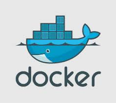

Docker DevKit
Overview
Docker is an open source platform for developing, shipping and running applications.
Docker enables you to separate your applications from your infrastructure to enable quick
software delivery. Docker provides the ability to package and run an application in an isolated environment called a container. Many containers can be run
on one host due to the isolation and security of the container. Containers are lightweight since a hypervisor is not needed, the container runs directly
within the host machines kernel.
Organizations that use Docker benefit in many ways: Increased developer productivity and velocity; utilizing docker aides in developers being more productive since
they do not have to individually setup the environments and figure out dependencies for getting started. The QA team also benefits from the use of Docker since they
do not need to install all the dependent software and applications to test the code, this saves time. This also ensures that the working environment is consistent
across all the individuals involved in the process, starting from development to deployment.
Subjects
PavedRoad enhancements
Daily Docker
Docker uses a client-server architecture. The Docker client talks to the Docker daemon, the daemon performs the building, running and
distributing of the Docker containers. The Docker client and daemon can run on the same system or a Docker client can be connected to a remote Docker daemon.
The Docker client and daemon communicate using a REST API, over UNIX sockets or a network interface.
Docker daemonThe Docker daemon (dockerd) listens for Docker API requests and manages Docker objects such as images, containers, networks, and
volumes. A daemon can also communicate with other daemons to manage Docker services.
Docker client The Docker client (docker) is the primary way that many Docker users interact with Docker. When you use commands such as
docker run
the client sends these commands to dockerd, which carries them out. The docker command uses the Docker API. The Docker client can communicate with more than one daemon.
Docker registriesA Docker registry stores Docker images. Docker Hub is a public registry that anyone can use, and Docker is configured to look for
images on Docker Hub by default. You can even run your own private registry. If you use Docker Datacenter (DDC), it includes Docker Trusted Registry (DTR).
When the docker pull or docker run commands are used, the required images are pulled from your configured registry. When you use the docker push command, your
image is pushed to your configured registry.
Docker objectsWhen you use Docker, you are creating and using images, containers, networks, volumes, plugins, and other objects. Below is a brief overview
of the objects:
- Images
An image is a read-only template with instructions for creating a Docker container. Often, an image is based on another image, with some
additional customization. For example, you may build an image which is based on the ubuntu image, but installs the Apache web server and your application,
as well as the configuration details needed to make your application run. You might create your own images or you might only use those created by
others and published in a registry. To build your own image, you create a Dockerfile with a simple syntax for defining the steps needed to create the image and run it.
Each instruction in a Dockerfile creates a layer in the image. When you change the Dockerfile and rebuild the image, only those layers which have changed are rebuilt.
This is part of what makes images so lightweight, small, and fast, when compared to other virtualization technologies.
- Containers
A container is a runnable instance of an image. You can create, start, stop, move, or delete a container using the Docker API or CLI.
You can connect a container to one or more networks, attach storage to it, or even create a new image based on its current state. By default, a container is
relatively well isolated from other containers and its host machine. You can control how isolated a container's network, storage, or other underlying subsystems
are from other containers or from the host machine. A container is defined by its image as well as any configuration options you provide to it when you
create or start it. When a container is removed, any changes to its state that are not stored in persistent storage disappear.
Example docker run command
The following command runs an ubuntu container, attaches interactively to the local command-line session, and runs /bin/bash.
docker run -i -t ubuntu /bin/bash
When this command is run, the following occurs (assuming the default registry configuration is being used):
1. If the ubuntu image is not local, Docker pulls it from the configured registry, as though a the comand docker pull ubuntu had been run manually.
2. Docker creates a new container, as though you had run a docker container create command manually.
3. Docker allocates a read-write filesystem to the container, as its final layer. This allows a running container to create or modify files and directories in
its local filesystem.
4. Docker creates a network interface to connect the container to the default network, since specific networking options were not given. This includes assigning
an IP address to the container. By default, containers can connect to external networks using the host machine's network connection.
5. Docker starts the container and executes /bin/bash. Because the container is running interactively and attached to thhhe terminal (due to the -i and -t flags),
a user can provide input using the keyboard while the output is logged to your terminal.
6. When the user types exit to terminate the /bin/bash command, the container stops but is not removed. You can start it again or remove it.
- Services
Services allow containers to scale across multiple Docker daemons, which all work together as a swarm with multiple managers and workers. Each member of
a swarm is a Docker daemon, the daemons all communicate sing the Docker API. A services is used to define the desired state, such as the number of replicas of the service that must
be available at any given time. By default the service is load-balanced across all worker nodes.
Docker is written in
Go and takes advantage of some features of the Linux kernel to deliver its functionality.
Namespaces
Docker uses a technology called namespaces to provide the isolated workspace called the container. When you run a container, Docker creates a set
of namespaces for that container. These namespaces provide a layer of isolation. Each aspect of a container runs in a separate namespace and its access is limited to
that namespace.
Docker Engine uses namespaces such as the following on Linux:
- The pid namespace: Process isolation (PID: process ID).
- The net namespace: Managing network interfaces (NET: Networking).
- The ipc namespace: Managing access to IPC resources (IPC: InterProcess Communication).
- The mnt namespace: Managing filesystem mount points (MNT: Mount).
- The uts namespace: Isolating kernel and version identifiers. (UTS: Unix Timesharing System).
Control Groups
Docker Engine on Linux also relies on another technology called control groups (cgroups). A cgroup limits an application to a specific set of resources.
Control groups allow Docker Engine to share available hardware resources to containers and optionally enforce limits and constraints. For example, you can limit
the memory available to a specific container.
Union file system
Union file systems, or UnionFS, are file systems that operate by creating layers, making them very lightweight and fast. Docker Engine uses UnionFS
to provide the building blocks for containers. Docker Engine can use multiple UnionFS variants, including AUFS, btrfs, vfs, and DeviceMapper.
Container format
Docker Engine combines the namespaces, control groups, and UnionFS into a wrapper called a container format. The default container format is libcontainer.
containerd
containerd is an industry-standard container runtime with an emphasis on simplicity, robustness and portability. It is available as a daemon for Linux and Windows,
which can manage the complete container lifecycle of its host system: image transfer and storage, container execution and supervision, low-level storage and
network attachments, etc.
containerd is designed to be embedded into a larger system, rather than being used directly by developers or end-users.
RunC
RunC is a container runtime originally developed as part of Docker and later extracted out as a separate open source tool and library. As a "low level" container
runtime, runC is mainly used by "high level" container runtimes (e.g. Docker) to spawn and run containers, although it can be used as a stand-alone tool.
Basic Commands
The complete list of Docker commands are located in
docker docs.
docker version [Options]Check the currently used Docker version on your system.
docker infoDislay system wide information
docker --help
docker login [options] [server]Log in to a Docker registry
Images
docker images Lists all the images on the local machine
docker pull[image name]Pull the image from Docker hub
docker rm [container id]Removes/deltes the stopped container
docker rmi [image id]Remove/delete the image from the local machine
Containers
docker run [image name]Runs the container from the image
docker psLists all running containers
docker ps -aLists all containers, running and exited
docker start[container id]To start a container
docker stop[container id]To stop a container that is running
docker exec it [container id] bashTo access the running container
docker kill [container id]Immediately stops the container
System
docker stats [image name]Use to live stream a container's runtime metrics.
docker system df [image name]Displays information regarding the amount of disk space used by the docker daemon
docker system prune [image name]The best way to remove all stopped, dangling and unused networks
Working with templates
Microservices
Data Managers
Creates a microservice used for managing object persisted to storage such as a
database. When select, you must juse a data store. Optionally, you can just an
event source.
API Gateways
Creates a microservice that acts as a proxy between to domains.
Aggregator
Aggregates data from lower level data sources including event streams and returns
information to the caller.
User Interface Components
Returns a UX component
Services
Creates a microservice that provides processing on object passed to it. For example,
authentication, translation, transformation, or annotation.
Custom Resource Controller
TBD
Serverless
TBD